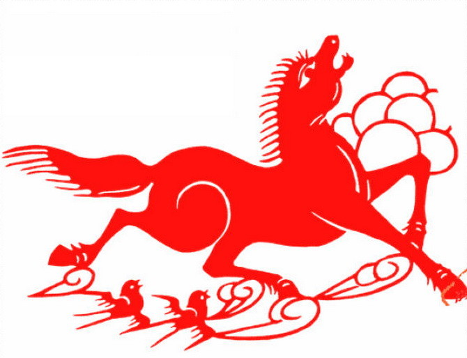

Horse
The Story of Chinese Zodiac
How to choose twelve kinds of Chinese Zodiac animals, this is a topic that people have been circulating from time to time. One year in the legend, Jade Emperor had a birthday, ordered all animals to come to the birthday on the 9th day of the first month, and decided to come forward to congratulate on birthday registration. Twelve kinds of animals are selected in sequence as guards to the heavens, and they are on duty every year.
According to legend, rats and cats were neighbors at the time, but cats that are usually large in size often bully weak mice. Rats are often angry and disgusted with cats. The cat had a sleepiness problem. After receiving orders from the Jade Emperor, the rats giggled: The opportunity to revenge the cat finally came. Sure enough, the cat slams the door of the mouse and asks the rat to wake it up when he wishes to celebrate the birthday of the emperor, and the mouse promised it. In order to revenge the cat, on the early morning and early morning of the first month, the rats set off quietly.
Although the rats got up very early and ran fast, they came to the broad riverside and faced with the river's water, and it became so tired that they had to sit on the river and wait for other animals to cross the river and jump to their backs. Use their power to cross the river. After waiting for a while, the earliest cattle went silently and step by step to the river. When the mouse yaks broke into the water, they quickly jumped into the cow's ears. The cows were usually honest and good at helping others. It does not care about the speculation of mice. After crossing the river, the mouse feels comfortable in the cow's ears, but it doesn't mean it's jumping out. At noon, the cow carried the mouse outside the door of the Jade Emperor.
When the cow was about to enter the door, someone knew that the rat could not wait to get out of the cow's ear and jumped to the front of Jade Emperor. In this way, the rat finally achieved first place. The cattle carrying it all the way, only second place. Later, tigers, rabbits, dragons, snakes, horses, sheep, monkeys, chickens and dogs also arrived one after another. Although stupid, the pig arrived on time and ranked 12th. The Jade Emperor gave them their annual rotation in the order of their registration. The order of the zodiac was thus determined.
On the tenth day of the first lunar month, the day was not yet bright. The cat who had been asleep for several days finally woke up. When it was dark, it was on the road. When it was being deserted and thought that other animals had not yet set off, it was coming to the jade. In front of the emperor, it knocked on the door and shouted "Jade Emperor -- the cat came to report --". The person who came to open the door said with a big smile to the cat, "You are a big stupid cat. You have been late for one day. Or go back and wash your face. Be clear and refreshed! Don't always be awake. Looks like the Jade Emperor's instructions are also thrown off the head. "At this point, the cat has been angry to the extreme. Since then, it has engulfed the mouse with unresolved grudges, and once he sees the mouse swear to kill it, there is no end to it. The fearless spirit, courage, and determination of the world's rats do not stop!